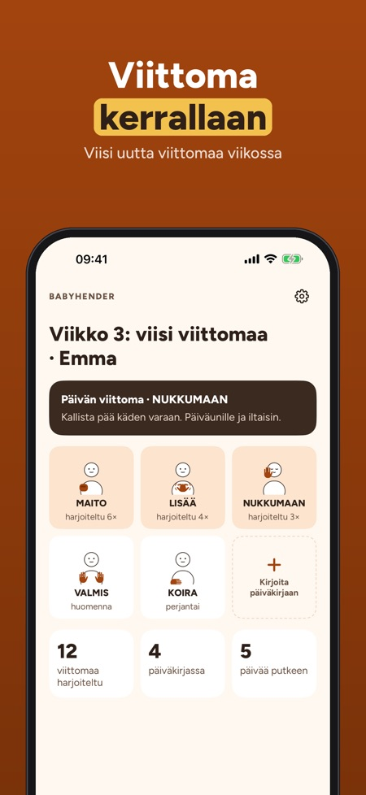
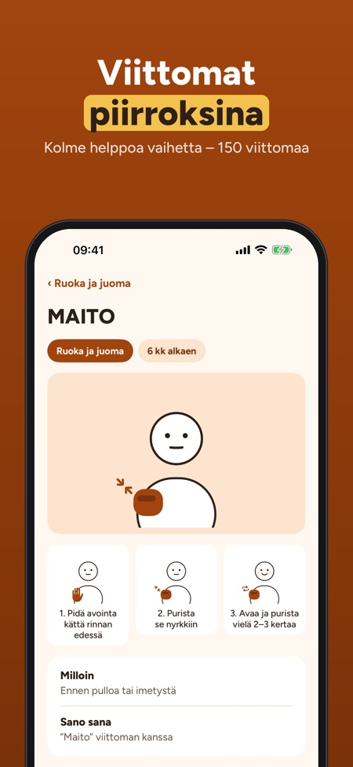
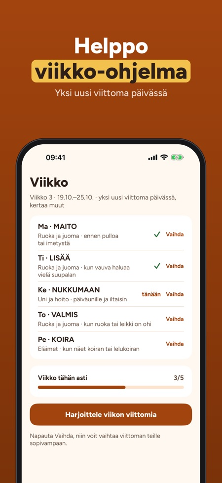

Viittomia ennen sanoja. Viito vauvan kanssa: 150 viittomaa piirroksin ja vaihein, viikko-ohjelma viidellä viittomalla ja päiväkirja ensimmäisille viittomille – ilman nettiä.



Babyhender auttaa käyttämään yksinkertaisia viittomia vauvan kanssa ennen sanoja – yksi pieni viittoma kerrallaan, arjessa.
30 viittomaa kolmesta aiheesta, ensimmäinen viikko-ohjelma, päiväkirja ja vinkit ovat käytössä ilman ostoa. Täysi versio on kertaosto, joka avaa kaikki 150 viittomaa, uudet ohjelmat, laulut, leikit ja edistymisen. Ei tilausta.
Viittomat ovat yksinkertaisia arjen eleitä vauvoille, itse piirrettyjä. Moni muistuttaa suomalaisen viittomakielen viittomia; sovellus linkittää Suvi-sanakirjaan virallista viittomaa varten. Babyhender on riippumaton, ei liity Kuurojen Liittoon eikä anna lääketieteellisiä neuvoja.